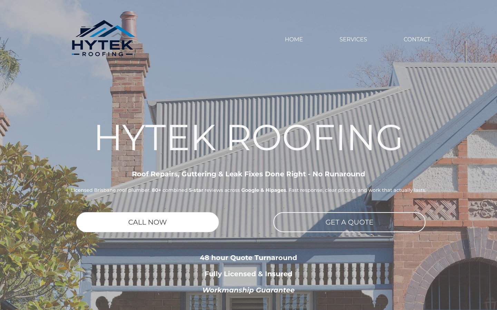
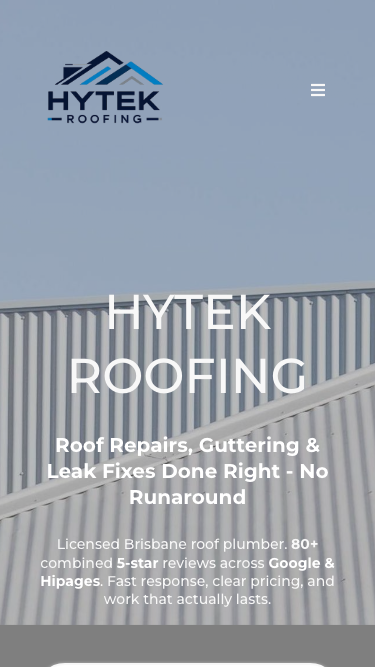

46/100 · strong_redesign · 行业：roofer · 地区：Brisbane · Google 评价：4.8★ （0 条）
投入分级： C 批量轻触 — 模板邮件 + 报告
PDF 链接，无主动跟进
触发依据： - C · strong_redesign · audit 46 · 0 评论 4.8★ (未达 B 标准)
下一步行动： 标准模板邮件 + master.md PDF 链接，无主动跟进。等客户回复触发后再投入。
线索来源 · 联系开场可用: - 来源:
Google Maps (gosom 抓取) - 搜索关键词:
roofer in brisbane - 首次发现: 2026-05-14
- Batch:
pipe-roofer-brisbane-202605141830
审计结论： audit_score=46 → strong_redesign · weakest: gbp 20, seo 25 · fired: no_https · 2 critical issues
已触发的 hard triggers： no_https
independent_http_site

慢速 4G 加载实景视频（1.6 Mbps · 150ms 延迟 · 4× CPU 节流，模拟真实手机访客的体验）：
The site has a real roofing image and clear service promise, but the first screen makes it harder than necessary for a Brisbane customer to call, verify trust, or request help quickly.
新鲜度 6/10 · 信任度 6/10 ·
转化准备度 5/10 · 设计年代
slightly_outdated
值得保留的优点： - The hero uses a real roofing-related photo instead of a generic stock graphic. - The headline clearly names the business, and the service line mentions roof repairs, guttering, and leak fixes. - The page already includes useful trust messages such as reviews, licensing, insurance, quote turnaround, and workmanship guarantee.
技术事实
http only
普通话翻译
你的网站没有 HTTPS — 浏览器会在地址栏显示「不安全」标记，部分浏览器（Chrome / Firefox）甚至会弹出全屏警告挡住页面。
对客户的影响
Google 早在 2018 年起把 HTTPS 列为搜索排名因素，没有 HTTPS 直接拉低自然搜索可见度；且超过 80% 的访客看到「不安全」标识会立刻关掉。对你这种 0 条 Google 评价积累起来的口碑来说，访客在网址栏就被劝退，等于浪费了所有 GBP 流量。
技术事实
phone hidden below fold or missing
普通话翻译
电话号码在第一屏看不到 — 客户必须滚动才能找到怎么联系你。
对客户的影响
本地服务客户 60-70% 倾向打电话沟通（不是填表单）。电话号没在第一屏 = 这部分客户里很多人会直接关掉去搜下一家。这是最便宜的转化优化之一。
技术事实
On the mobile screenshot, the visible first screen ends with only the top edge of a white rounded element at the bottom; there is no readable phone number, ‘Call Now’ button, or quote button visible above the fold.
普通话翻译
手机首屏看不到可以直接打电话的按钮，客户还要往下滑或点菜单才知道怎么联系你。
对客户的影响
本地找屋顶维修的人多数是在手机上快速比较商家，常见行为是在几秒内决定要不要打电话；如果首屏不能马上联系，很多客户会直接回到 Google 地图选下一家。
正确长啥样
Mobile first screen should show a sticky bottom phone button or a clear ‘Call Now’ button directly under the headline, with the phone number readable and tappable without scrolling.
Redesign 怎么改
Move a high-contrast ‘Call Now’ CTA and phone number into the mobile hero, and add a sticky bottom bar with ‘Call’ and ‘Get Quote’ actions.
技术事实
0 reviews
普通话翻译
你的 Google 评价数量低于同行平均水平。
对客户的影响
本地搜索排名信号之一就是评价数量；不光是分数，连”有多少条”都算。短期可以做的：每个完工的客户群发一条「点评一下吧」的 SMS。
技术事实
title=‘## HYTEK ROOFING’ contains-name=true contains-niche=false
普通话翻译
你网站的浏览器标签 title 没把业务名字 + 服务关键词写清楚（比如该写「Hytek Roofing - roofer Brisbane」，但目前是泛泛一句）。
对客户的影响
Google 搜索结果里展示的就是这个 title。写不清楚 = 排名靠后 + 即使排上来客户也不知道是不是匹配的服务。SEO 最便宜的修复，但很多本地企业完全没做。
技术事实
9tags
普通话翻译
页面要么没有 H1 标题（搜索引擎无法理解页面主旨），要么有多个 H1（搜索引擎不知道哪个是主题）。
对客户的影响
H1 是搜索引擎判断页面主题最权威的信号。写错或缺失 = 关键词排名拉低；同一页面同样的内容，H1 写对的可以排到前 3 页，写不对的可能挂在第 7 页。
技术事实
no LocalBusiness JSON-LD
普通话翻译
网站没有 LocalBusiness JSON-LD 结构化数据（让 Google / AI 知道你是本地企业、地址、电话、营业时间的标准格式）。
对客户的影响
Google「附近的服务」「Knowledge Panel」「AI Overview」都依赖这类结构化数据。没有 = 即使排名上去也不会出现在右侧 Knowledge Panel 或地图卡片里 — 错失高转化的展示位。AI agent / ChatGPT 引用本地商家时也是基于这些数据。
技术事实
On desktop, the top navigation only shows HOME, SERVICES, and CONTACT; there is no phone number or emergency call action in the header.
普通话翻译
电脑端顶部只有菜单，没有电话号码；客户想联系时需要自己去找。
对客户的影响
客户越接近打电话，页面越不能增加步骤。少一个明显电话号码，就可能少一次询价，尤其是从 Google 商家资料点进来的高意向客户。
正确长啥样
Desktop header should include a visible phone number on the right, such as ‘Call 07 xxxx xxxx’, plus a distinct quote button beside it.
Redesign 怎么改
Replace the plain ‘CONTACT’ nav item area with a visible phone number button and a secondary ‘Request Quote’ button, keeping navigation links smaller.
技术事实
The large white ‘HYTEK ROOFING’ headline, white service line, and small white paragraph sit over a pale grey metal roof and washed-out sky.
普通话翻译
白色文字放在浅色屋顶和天空上，有些内容不够醒目，看起来费眼。
对客户的影响
访客通常只扫一眼首屏，如果看不清你做什么、服务哪里、有没有保障，就更容易离开；首屏信息不清会直接减少电话和报价请求。
正确长啥样
Hero text should sit on a darker overlay area or a solid color panel, with 16px+ readable body text and strong contrast between text and background.
Redesign 怎么改
Add a controlled dark overlay behind the hero copy, or place the copy in a left-aligned section over the darker part of the image while preserving the roof photo.
技术事实
On desktop, ‘CALL NOW’ is a large white pill button on the left, while ‘GET A QUOTE’ is a white outlined pill button on the right; neither includes a phone number.
普通话翻译
两个按钮看起来差不多，而且没有电话号码，客户不清楚应该先点哪个。
对客户的影响
选择越多、越不清楚，客户越容易犹豫。屋顶维修这种急事，按钮应该让客户一秒知道怎么联系，否则询价机会会流失。
正确长啥样
One primary CTA should dominate, such as a filled high-contrast ‘Call 07 xxxx xxxx’ button, with ‘Get a Quote’ as a quieter secondary action.
Redesign 怎么改
Make ‘Call Now’ the primary colored button with the phone number included, and restyle ‘Get a Quote’ as a secondary text or outline button nearby.
技术事实
The hero paragraph says ‘80+ combined 5-star reviews across Google & Hipages’, and the lower hero lists ‘48 hour Quote Turnaround’, ‘Fully Licensed & Insured’, and ‘Workmanship Guarantee’, but there are no visible review stars, licence number, badges, or customer proof in the screenshot.
普通话翻译
页面写了很多可信承诺，但没有把星级评价、执照信息或真实客户证明展示出来。
对客户的影响
客户在 Google 上会同时比较好几家 roofer，看到可验证的评价和资质更容易放心打电话；只写一句话，信任感会弱很多。
正确长啥样
Trust area should show visible star rating, review count, Google/Hipages labels, licence/insurance detail, and a short real testimonial or project proof near the CTA.
Redesign 怎么改
Add a compact trust strip under the hero CTA with Google stars, ‘80+ reviews’, licence/insurance note, and a link or visual cue to verified reviews.
技术事实
The mobile header shows the Hytek logo on the left and a small hamburger icon on the right, with no visible phone icon or quote action.
普通话翻译
手机顶部最显眼的是菜单，不是电话；对找维修的人来说顺序反了。
对客户的影响
本地服务客户通常是带着问题来的，不是慢慢逛网站。把电话藏起来会让急单客户更快跳去能马上拨打的竞争对手。
正确长啥样
Mobile header should show logo, phone icon/button, and optionally a smaller menu icon, with the call action visually stronger than navigation.
Redesign 怎么改
Replace the right-side hamburger-only header with a phone icon button and keep the menu accessible as a secondary icon or inside a sticky action bar.
PSI 给的是宏观分数，下面是具体可改的两块：图片格式与 tracker 脚本。
总评： 基本未优化 — redesign 可显著降低图片下载量
具体问题： - [major] 42 张图几乎全是 JPG/PNG，未用 WebP/AVIF — 估算可节省 30-50% 图片下载量 - [minor] 42/42 张图无响应式 srcset — 移动端浪费带宽 - [minor] 25/42 张图未 lazy load — 首屏外的图阻塞主线程 - [major] 40/42 张图缺 alt 文字 — 影响 SEO + 可访问性 + AI 抓取 - [minor] 42/42 张图无显式 width/height — 加重 CLS 布局抖动
客户最常担心的问题：「我重做网站，会不会丢掉 Google 排名？」这一段直接回答。
reject）weak (只有 1/3 —
邮件营销前必须修)这是后续 「Social Media Management 月度包」 或 「Cold Outreach 启动包」 的前置条件 —— 邮件 DNS 没修好，发出去的邮件全进垃圾箱。redesign 时一并处理。
从网站源码识别出来的工具，能帮我们判断这位客户的数字成熟度。
数字成熟度打分： 0 / 6 （低 — 客户对网站的认知是「有就行」，需要先讲清楚一份能赚钱的网站长什么样）
本地服务的客户在掏钱之前会查这些凭证。缺失 = 客户跳到下一家。
信任分： 40/100
GEO = Generative Engine Optimization。ChatGPT、Perplexity、Google AI Overviews 这些 AI 搜索产品不像传统搜索引擎那样按”关键词排名”工作，它们直接抓取结构化数据并把答案合成给用户。如果你的网站在 AI 抓取这一块做得不到位，等于在生成式搜索时代隐身。
AI 可发现性总分： 10 / 100 — AI agent / ChatGPT 几乎无法准确引用此网站 — 在生成式搜索时代等于隐身
llms_txt_present — llms.txt found (639622
bytes)eeat_warranty_trust — warranty/guarantee
mentionedai_bot_robots_policy (5 分) — robots.txt has no
explicit policy for AI crawlers (GPTBot/ClaudeBot/etc)localbusiness_schema (15 分) — no LocalBusiness
or Organization JSON-LDservice_schema (10 分) — no Service JSON-LDfaqpage_schema (10 分) — no FAQPage JSON-LD
(loses AI Overview / featured snippet eligibility)aggregaterating_schema (5 分) — no
AggregateRating JSON-LD (★ rating not shown in search snippets)breadcrumb_schema (5 分) — no BreadcrumbList
JSON-LDsemantic_landmarks (10 分) — 1 semantic
landmarks present: <sectionfaq_qa_pattern (10 分) — 2 question-style
heading(s) found (Q&A format helps AI extraction)eeat_business_credentials (10 分) — only 1/4
credentials found (license/QBCC) — need ≥2 of: ABN, license/QBCC,
years-in-business, insurancejsonld_at_least_one (10 分) — 0 JSON-LD block(s)
detected on page销售切入： 「ChatGPT 现在每月 30 亿次搜索，本地服务用户问『Brisbane 哪家屋顶公司靠谱』，AI 回答时只引用结构化数据完整的网站。你目前在这个新阵地的得分是 10/100。」
redesign 是一次性收入。以下是基于这个客户当前现状自动识别的持续性服务包机会，可以在 redesign 提案签字时一并捆绑进去。
触发依据： 网站上没检测到任何社交媒体链接 — 连基础的多渠道触点都缺。
包内容： 一次性：FB / IG 商家档案 setup + 品牌头像/封面 + 内容模板 5 套 (3-5K 一次性)。月度：4 帖 + 评论管理 + 月度报表。
月度费用区间： $1,500 setup + $600-900/月
销售切入： 「Google Maps 流量进来后没有第二落点，意味着客户当下没决定就走了 — 没办法再触及。社交账号是免费的二次触达管道。」
触发依据： 网站没有 blog 板块 — 没有内容营销基础设施，长尾 SEO 流量为零。
包内容： 每月 2 篇 SEO-optimized blog（800-1,200 字）+ 每季度 1 篇 case study（含 before/after 图）+ 关键词研究报告。
月度费用区间： $400-800/月
销售切入： 「ChatGPT 时代搜索引擎更偏爱有「专家深度内容」的网站。你目前的网站只有服务介绍页 — AI 可引用的素材几乎为零。」
-2026-05-11-v1codex_cliGoogle Places · most_relevant (max 5)